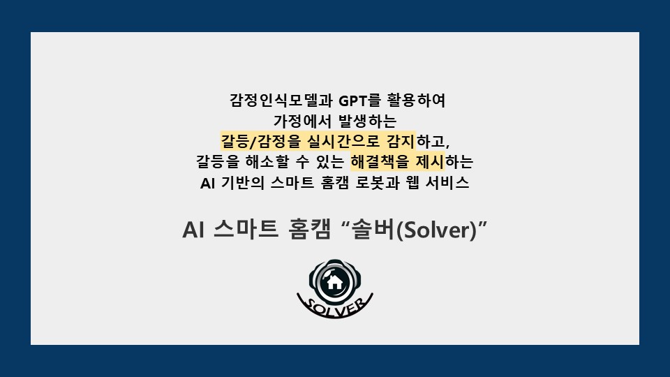
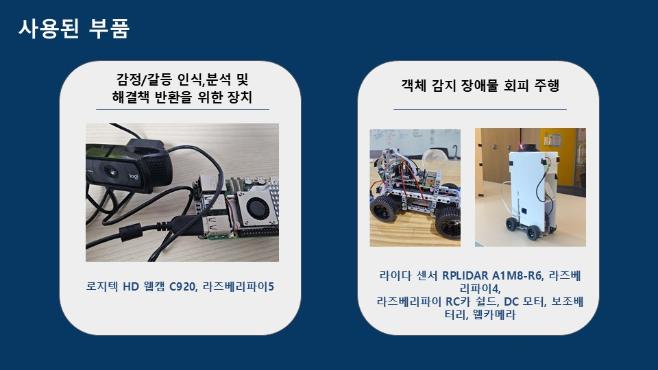
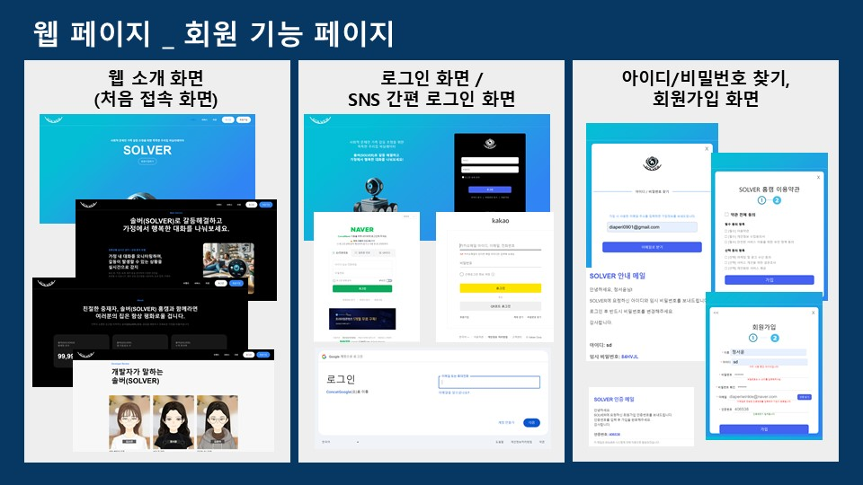
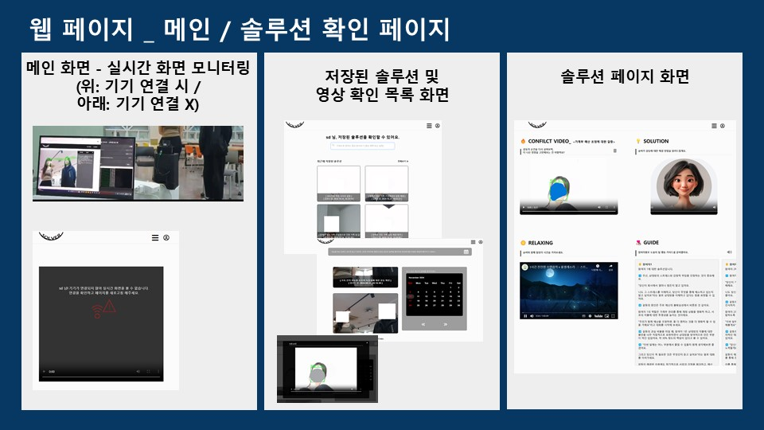
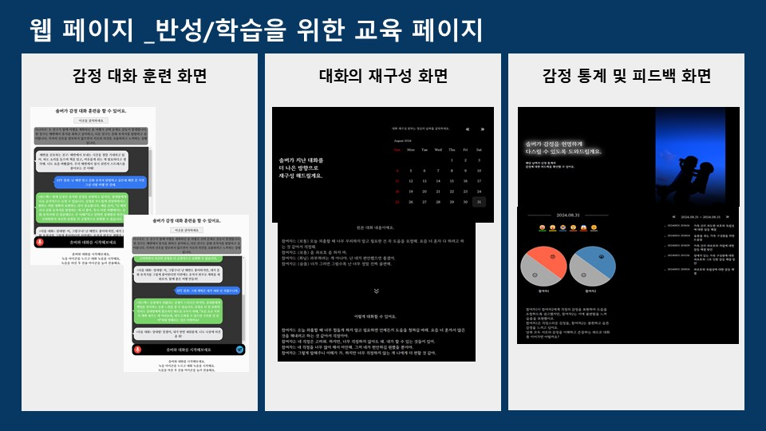
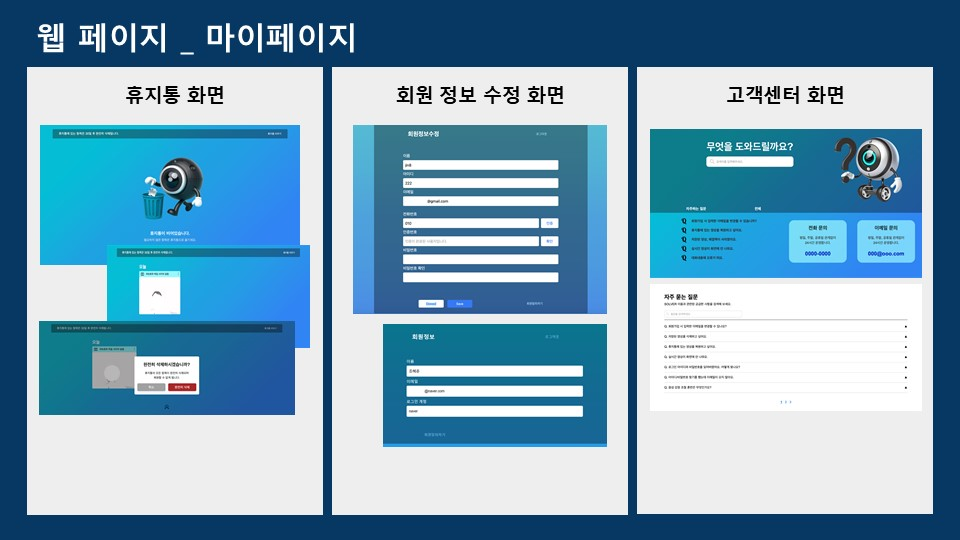

×
CONCAT






작품 설명
‘솔버’는 인공지능 기술을 포함한 다양한 IT기술로 가족 감정 갈등을
해소하는 해결책을 제시하는 홈캠 로봇이다. 카메라로 가족 구성원들을
모니터링 하며 표정, 음성 톤, 단어 기반의 3가지 멀티감정인식모델을
활용하여 가족 내에서 발생하는 갈등/감정을 실시간으로 인식한다. STT와
화자인식을 통해 감정 매칭된 대화 내용을 구성한 후, 생성형 AI인 GPT
API를 활용하여 대화 내용을 분석하고 갈등에 대한 맞춤형 해결책을
제시하는 AI 기반 해결사 홈캠 로봇과 웹 서비스이다. 해결 방법이
생성되는 즉시, 사용자의 핸드폰으로 갈등에 대한 해결 방법을 확인을
요구하는 문자 서비스를 제공하여 웹 페이지에 대한 접근성을 높인다.
모니터링을 잘 수행할 수 있도록 주행기기를 통해 객체 감지 주행과
장애물을 회피하며 사람이 있는 갈등 장소로 이동한다. 연동된 웹
페이지를 통해 Vidnoz 서비스에 있는 AI 영상 생성을 자체적으로
자동화하여 갈등 분석 결과와 해결책을 시각적, 청각적으로 제공한다.
하단에는 참여자별로 자세한 맞춤형 솔루션을 텍스트와 TTS를 통해
제공하며, YouTube API를 통해 랜덤화 된 마음의 안정을 도와주는 영상이
자동 재생되어 흥분된 감정을 가라앉힐 수 있도록 한다. 이를 통해, 가족
구성원 간의 원활한 소통과 갈등 해결을 도울 수 있다. 이러한 기능을
통해 ‘솔버’는 가족 구성원 간의 갈등을 분석하고 해결하며, 가족 관계를
개선하고 정서적 안정에 기여하는 것을 목표로 한다. 갈등 상황을 단순히
진단하는 데 그치지 않고, 실시간으로 문제를 감지하고 맞춤형 해결책을
제시함으로써 가족의 신뢰와 유대감을 증진시킬 수 있다.
팀인원(역할)
정서윤 : 팀장, 웹, 하드웨어, 인공지능 모델, DB 개발 | 김소연 :
디자인 | 김윤아 : 웹, 인공지능 모델, DB 개발 | 조혜은 : 웹 개발 |
최윤서 : 웹, 하드웨어 개발
작품소감
정서윤 | 이번 졸업작품 프로젝트는 기술적으로나 개인적으로나 제게 큰
의미를 가진 여정이었습니다. 팀장으로서 처음부터 끝까지 프로젝트를
이끌며, 단순히 작업을 관리하고 결과물을 만드는 데 그치지 않고,
팀원들과 함께 성장하고 배울 수 있는 기회를 가질 수 있었습니다. 특히,
하드웨어와 인공지능 모델을 처음 다루는 과정에서 정말 많은 어려움의
시간들이 있었지만 팀원들과 함께 고민하고 해결 방안을 찾으며, 협력과
소통의 중요성을 깊이 깨달았습니다. 프로젝트가 계획대로 진행되지
않거나 예기치 못한 문제가 발생할 때마다, 팀원들과의 열린 대화를 통해
해결책을 찾았던 경험은 제게 큰 교훈으로 남았습니다. 각자가 맡은
역할에 충실하면서도 서로 부족한 부분을 메워주는 협업의 과정은 단순한
결과물 이상의 가치를 느끼게 해주었습니다. 또한, 프로젝트를 통해
끊임없이 배우고 성장하는 자신을 발견할 수 있었습니다. 하드웨어와
소프트웨어의 통합, 인공지능 모델의 개발, 웹 기능 구현 등 다양한
기술적 과제를 해결하며 제 한계를 뛰어넘고자 했습니다. 특히, 감정
인식 모델을 개발하며 데이터 불균형 문제를 해결했던 과정은 끈기와
문제 해결 능력을 키울 수 있었던 중요한 경험이었습니다. 무엇보다도,
이 프로젝트는 단순한 졸업작품 이상의 의미를 가졌습니다. 사용자에게
실질적인 도움을 줄 수 있는 결과물을 만들어냈다는 점에서, 기술이
사람들에게 어떻게 가치를 제공할 수 있는지를 깊이 고민하게
되었습니다. 팀원들과 함께 우리의 아이디어가 구체적인 결과물로
완성되는 순간 느꼈던 성취감은 앞으로도 오랫동안 기억에 남을
것입니다.이번 경험은 앞으로의 길에 있어 제게 중요한 밑거름이 될
것입니다. 기술적 도전을 두려워하지 않고, 협업과 리더십을 통해 목표를
이룰 수 있다는 자신감을 얻었습니다. 이 경험을 바탕으로 더 나은
솔루션을 만들어내며, 기술로 사람들에게 실질적인 변화를 가져올 수
있는 개발자가 되고자 합니다. 함께해준 팀원들과 지도해주신 분들께
진심으로 감사드립니다.
김소연 | 이번 졸업작품에서 웹페이지 디자인과 발표 자료 제작을 맡아
프로젝트의 완성도를 높이는 데 기여했습니다. 처음에는 주제를 바탕으로
디자인 요소를 기획하고 이를 사용자에게 어떻게 효과적으로 전달할지
고민이 많았습니다. 하지만 팀원들과의 협업을 통해 점차 명확한 방향을
잡을 수 있었습니다. 특히, 피그마를 활용해 프로토타입을 제작하고 주변
사람들에게 피드백을 받아 디자인을 개선하는 과정에서 많은 것을 배울
수 있었습니다. 이 프로젝트를 통해 디자인 작업뿐만 아니라 팀워크와
협업의 중요성을 깊이 깨달았습니다. 디자인이 잘 구현되려면 개발팀과의
원활한 소통이 필수적이라는 점도 체감하게 되었고, 버튼, 아이콘, 색상
코드 등 웹 페이지의 세부 요소를 정의하고 공유하며 작은 디테일이 전체
프로젝트의 흐름과 일관성에 얼마나 큰 영향을 미치는지 알게
되었습니다. 또한, 개발과 조립 작업 맡아 늦은 밤까지 고생한
팀원들에게 진심으로 감사의 인사를 전합니다. 제가 맡은 역할 외에도
팀원들의 노력 덕분에 프로젝트가 성공적으로 완성될 수 있었습니다. 이
프로젝트를 통해 큰 경험과 앞으로의 도전에도 많은 도움이 될 것
같습니다. 이번 프로젝트를 통해 많은 것을 배울 수 있었고, 팀원들과
함께한 모든 순간이 소중한 추억으로 남았습니다. 감사합니다.
김윤아 | 이번 졸업작품 프로젝트는 제게 정말 중요한 경험이었습니다.
처음 프로젝트를 시작할 때는 이걸 정말 해낼 수 있을지 막연한 불안감과
부담감이 있었지만, 팀원들과 함께 문제를 하나하나 해결해 나가면서
많은 것을 배웠습니다. 팀원들이 각자의 역할을 맡아 상호 보완하며
프로젝트를 성공적으로 이끌어내어 더욱 값진 경험이 되었습니다. 이를
통해 얻은 것은 기술적 성과뿐만 아니라, 문제 해결 능력과 팀워크의
중요성입니다. 이러한 성장과 자신감은 지금도 제게 큰 힘이 되고
있습니다. 웹 개발을 맡으면서 다양한 기능을 구현하는 과정은 저에게
많은 도전과 배움을 안겨주었습니다. 특히 처음 다루어본 스프링부트와
AWS S3를 사용해 웹의 휴지통 기능을 구현하면서 파일 삭제와 복구
과정에서 많은 고민과 시행착오를 겪었고, 이는 새로운 기술을 익히는 데
큰 도움이 되었습니다. 시간이 많이 걸렸지만, 문제를 해결해 나가며
성장할 수 있는 기회가 되었습니다. 프로젝트를 진행할 때마다 어려운
문제를 해결했을 때의 성취감은 큰 동기부여가 되었고, 그 과정에서 제가
성장해 나가는 모습을 느낄 수 있었습니다. 결과적으로 이러한 경험들이
프로젝트의 완성도에 크게 기여했다고 생각합니다. 특히, 사용자의
경험을 개선하기 위해 SMTP 서버를 활용한 이메일 인증 기능과 CoolSMS
API 및 AWS S3 연동을 통해 알림 문자 발송 기능을 구현한 것은 시스템
연동과 보안의 중요성을 실감하게 해주었습니다. 팀원들과 방학에도 함께
고민하며 도전했던 경험은 정말 잊지 못할 추억으로 남을 것 같습니다.
이 과정에서 얻은 지식과 교훈은 저의 발전을 위한 기초가 되어 앞으로
개발자로서 큰 도움이 될 것입니다. 이 프로젝트는 저에게 단순한 졸업
작품이 아닌, 성장과 도전의 시간이었으며, 그 시간을 함께한 팀원들에게
감사의 마음을 전하고 싶습니다. 앞으로도 이러한 경험을 바탕으로
끊임없이 발전하고, 더 나은 개발자가 되기 위해 노력할 것입니다.
조혜은 | 저는 이번 프로젝트를 처음 시작할 때 막막함과 걱정이
많았습니다. 과연 이 과제를 잘 해낼 수 있을지에 대한 불안감도 있었고,
처음 접하는 기술과 다양한 문제들이 다소 부담스럽게 느껴졌습니다.
하지만 시간이 지나면서 팀원들과 적극적으로 아이디어를 공유하고,
각자의 관점에서 문제를 분석하며 해결책을 찾아나가는 과정이 무척
뜻깊고 의미 있게 다가왔습니다. 이 과정에서 팀워크의 중요성을 다시금
깨닫게 되었고, 서로의 강점을 살려 역할을 분담하고 협력한 덕분에
만족스러운 결과물을 만들어낼 수 있었습니다. 이번 프로젝트를 통해
지금까지 배운 내용을 실제 상황에 적용해 보는 것은 물론, 새로운
기술을 익히고 이를 실질적인 문제 해결에 활용하는 귀중한 경험을 할 수
있었습니다. 다양한 웹 기능을 직접 개발하면서 끊임없이 고민하고
문제를 해결해 나가는 과정에서 스스로 한 단계 더 성장하였음을
느꼈습니다. 특히, TTS 기능을 구현하며 사용자 경험을 개선하는 방법에
대해 깊이 고민하고 학습할 수 있었습니다. 또한 Naver Clova Speech
API를 활용해 STT와 화자 분리 기능을 개발했던 경험이 기억에 많이
남습니다. 처음에는 익숙하지 않은 기술에 시행착오도 많았지만, 하나씩
문제를 해결해 나가며 API 활용법과 음성 데이터 처리 방법을 익힐 수
있었습니다. 이러한 과정을 통해 새로운 기술을 익히고 이를 실제로
적용하는 데에 자신감을 얻게 되었습니다. 이번 졸업작품은 단순히
학업을 마무리하는 프로젝트를 넘어, 제 미래를 향한 첫걸음이었다고
생각합니다. 이 경험을 통해 앞으로 더 큰 도전도 두려워하지 않고,
끊임없이 배우며 발전해 나가는 사람이 되고 싶습니다.
최윤서 | 이번 졸업작품은 저에게 매우 도전적이었고, 동시에 많은
성장을 이룬 경험이었습니다. 특히 하드웨어 기기를 처음 접하게 되어서
낮설기도 하고 막막하기도 했습니다. 하드웨어를 결합하여 구현하는
문제와 하드웨어와 소프트웨어의 통합 과정에서 발생하는 여러 가지
문제들은 처음 접하는 분야라서 더욱 어려웠습니다. 하지만 점차
하드웨어와 소프트웨어가 어떻게 상호작용하는지를 이해하면서 ,주행
기기의 객체 감지 및 장애물 회피 로직과 기능을 구현할 수 있었습니다.
어려운 부분이 많았지만 그만큼 새로운 지식을 배울 수 있어 매우 값진
경험이었습니다. 웹 개발과 하드웨어 기기 개발을 동시에 진행하는 것은
평소에 관심 있던 분야인 웹 개발과 처음 도전하는 하드웨어 분야를 모두
경험할 수 있는 기회였기에 더욱 뜻깊었습니다. 개발 초기에는 웹 개발과
하드웨어 개발을 모두 잘 해낼 수 있을지 고민하며, 두 가지 분야를
동시에 개발해야 한다는 부담감도 있었습니다. 하지만 팀 내 주기적인
회의와 일정 조율을 통해, 틈틈히 시간을 활용하여 프로젝트를 완성도
있게 진행할 수 있었습니다. 많은 시간을 투자하며 기존에 알고 있던
얕은 지식을 심화시키고, 이론적인 개념을 실제 개발에 적용해보는
경험을 통해 기술적인 지식이 확장되었습니다. 또한 여러 오류와 문제를
겪고 이를 해결해가며 실질적인 개발 역량을 쌓을 수 있었습니다.
무엇보다 중요한 것은 그 과정에서 포기하지 않고 계속해서 해결책을
찾으며 프로젝트를 완성한 제 자신의 모습을 발견할 수 있었다는
점입니다. 각자의 역할을 맡아 진행하면서도 발생하는 문제에 대해서는
함께 고민하고 해결해나가는 과정이 매우 중요했으며 이를 통해 팀워크와
협력의 가치를 다시 한번 느낄 수 있었습니다. 이러한 경험이 앞으로의
제 미래와 도전에서 중요한 출발점이 될 것이라고 확신하며 IT와 개발
분야에서 지속적으로 성장하고 다양한 도전에 맞서며 발전해 나가고
싶습니다.